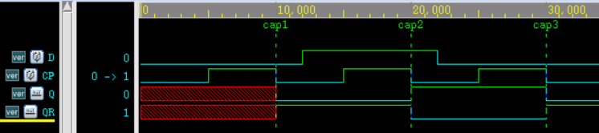

Ejemplo de compuerta NAND
En un UDP de lógica combinacional, la tabla de estados especifica las diferentes combinaciones de entrada y los valores de salida correspondientes; para cualquier combinación no especificada, el valor de salida es x.
Un UDP simple de compuerta NAND se puede representar de la siguiente manera:
output out ;
input a, b ;
table
//a b : out ;
0 0 : 1 ;
0 1 : 1 ;
1 0 : 1 ;
1 1 : 0 ;
endtable
endprimitive
Como se explicó en la sección anterior, la lista de puertos y la parte de declaración se pueden cambiar a:
output out,
input a, b);
......
endprimitive
Entradas de la tabla de estados
El formato de sintaxis para cada fila en la tabla de estados que representa lógica combinacional es el siguiente:
<input1> <input2> ... <inputN> : <output> ;
- 1. El orden de las señales input en la tabla de estados debe coincidir con el orden de la lista de puertos del UDP.
- 2. La entrada y la salida se separan:con dos puntos.
- 3. Cada fila de la tabla de estados finaliza;con punto y coma.
- 4. Todas las combinaciones de entradas que produzcan un valor de salida definido deben estar listadas en la tabla de estados; de lo contrario, la salida será x.
Por ejemplo, en el UDP nand_my anterior, si a=0, b=x, entonces la salida out = x, porque esa combinación no se encuentra en la tabla. Por lo tanto, al escribir un UDP, se deben considerar completamente todas las combinaciones de entrada.
La tabla de estados del UDP nand_my se puede modificar a:
//a b : out ;
0 0 : 1 ;
0 1 : 1 ;
1 0 : 1 ;
1 1 : 0 ;
0 x : 1 ;
x 0 : 1 ;
endtable
Términos irrelevantes
En el UDP nand_my, cuando cualquiera de las entradas a o b es 0, la salida es 1.
Las señales de entrada que no afectan el resultado de salida son términos irrelevantes (don't cares) y se pueden representar con el signo de interrogación "?". Los elementos "?" en la tabla de estados se expandirán automáticamente a 0, 1 o x.
Por lo tanto, la tabla de estados del UDP nand_my se puede cambiar a:
//a b : out ;
0 ? : 1 ;
? 0 : 1 ;
1 1 : 0 ;
// La siguiente combinación generará x, por lo que también se puede omitir; Verilog generará x por defecto
1 x : x ;
x 1 : x ;
endtable
Instanciación de UDP
El formato de invocación de un UDP es exactamente igual al de las primitivas de nivel de compuerta integradas.
Utilice el UDP nand_my anterior para completar«1.3 Retardo de puertas»la simulación del flip-flop D en esa sección.
Eliminando la información de retardo, el modelo del flip-flop D es el siguiente.
Ejemplo
input D, CP,
output Q, QR);
//part1, not gate
wire CPN, DN ;
not (CPN, CP);
not (DN, D);
//part2, master trigger
wire G3O, G4O ;
nand_my (G3O, D, CP);
nand_my (G4O, DN, CP);
wire G1O, G2O ;
nand_my (G1O, G3O, G2O);
nand_my (G2O, G4O, G1O);
//part3, slave trigger
wire G7O, G8O ;
nand_my (G7O, G1O, CPN);
nand_my (G8O, G2O, CPN);
wire G5O, G6O ;
nand_my (G5O, G7O, G6O);
nand_my (G6O, G8O, G5O);
assign Q = G5O ;
assign QR = G6O ;
endmodule
El testbench permanece sin cambios; los resultados de la simulación son los siguientes.
Como se puede ver en la figura, el flip-flop captura la señal del terminal D en el flanco descendente del reloj CP, la transmite a Q/QR y la mantiene durante un ciclo.
La función de compuerta NAND implementada con el UDP es correcta.
